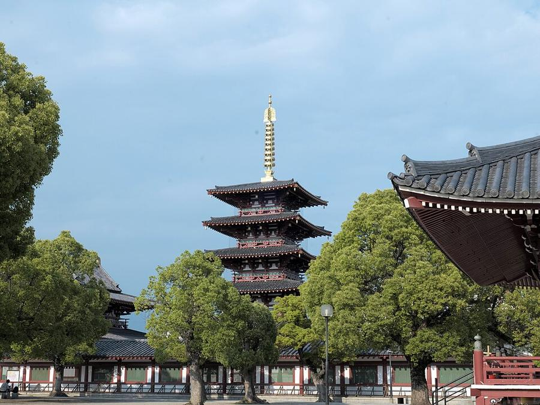
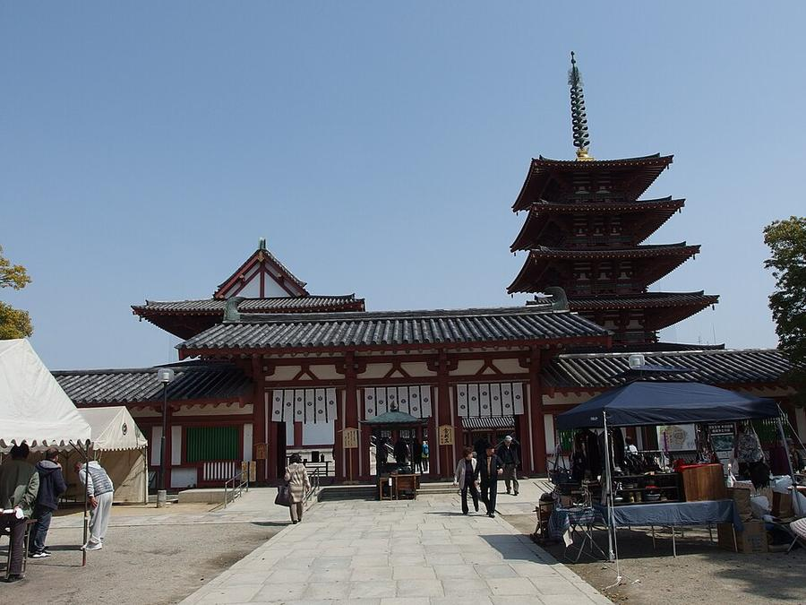
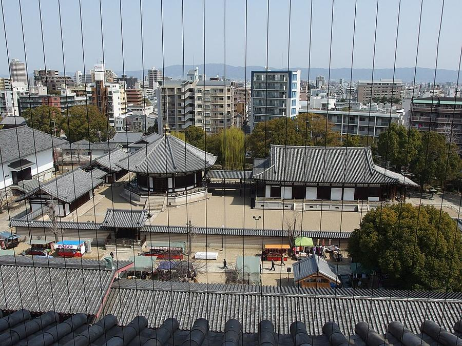
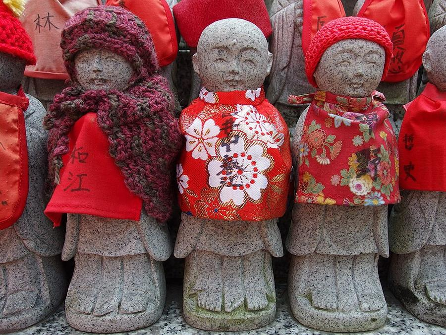

12Shitennoji
四天王寺 · Ещё в городе




Храм заложен в 593 году принцем Shotoku, одним из первых покровителей буддизма в Японии. Здания много раз горели, последний раз восстановлены в 1963 году по древнему плану: ворота, пятиярусная пагода (39 м со шпилем) и главный зал стоят на одной линии.
15 минут пешком от Abeno Harukas. Отличие от храмов Kyoto - это не дзен-сады, а большой открытый двор, куда приходят местные. Закрывается в 16:00.
| Часы | 8:30-16:00 (октябрь-март) |
|---|---|
| Вход | центральный двор с пагодой 500 ¥, сад Gokuraku-jodo 300 ¥, сокровищница 500 ¥ |
| Наши даты | открыто 24-26.10 |
| На месте | 45 мин |
| Дождь | ⛅ часть под крышей, в дождь - частично |
Источник часов и цен: shitennoji.or.jp (офиц.)
Как добраться от отеля
- Метро Midosuji до Tennoji (17 мин) + ~16 мин пешком на север, или метро Tanimachi до Shitennoji-mae Yuhigaoka.
Видео


_hdsr_S5_07.jpg){kind=link}

.jpg){kind=link}

.jpg){kind=link}

.jpg){kind=link}
Рядом

11. Abeno Harukas 300Смотровая на высоте 300 м, вся под крышей

10. Shinsekai и башня TsutenkakuРетро-квартал 1912 года, кушикацу, башня 1956 года
Фото: Wikimedia Commons, автор и лицензия под каждым. Поезда: Yahoo!乗換案内 на 24-26.10.2026, пешие отрезки: OSRM. Часы и цены проверены 24.10.2026 13:50 JST. ← ко всем местам